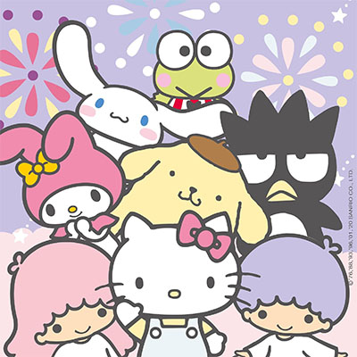

About Sanrio

The company name, Sanrio, is derived from the Spanish words San Rio, which literally mean “Saint River” in English. Sanrio was established with the desire to build a peaceful culture on the riverbanks, where it’s said that humans first began to make homes for themselves. The hope was to create a community of people who could live in harmony and with consideration for each other. They were established in 1960 ans Yamanashi Silk Center Co., Ltd. in Tokyo, and in 1969 the company established Sanrio Greeting Co. Ltd. and began planning and sales of greeting cards.
The Introduction of Sanrio Characters
- In 1973 the company introduced their first character Coro chan
- In 1974 their most well known character Hello Kitty was introduced along with Patty & Jimmy.
- In 1975 Little Twin Stars and My Melody were introduced.
How Many Charcters Are There?
- As of 2024 there are 450 Sanrio Characters.
- The most recent addition is Hanamaruobake, he was created in 2022 and released to the public in 2023.
Contacting Sanrio
Sanirios Head Office is located in Tokyo the capital city of Japan.
We can contact Sanrio U.S.A (a subsidiary) at their HQ in California with questions, comments, and concerns.
2050 W. 190th St, Suite 205 Torrance, CA 90504
Toll-free: (866) 957-0006